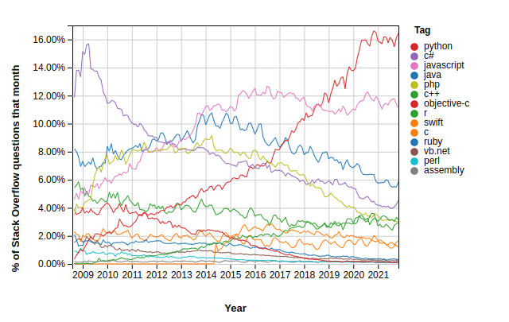
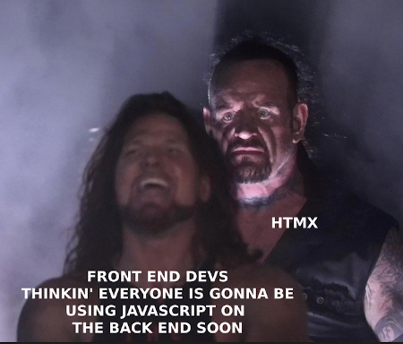

A Response To "Have Single-Page Apps Ruined the Web?"
Carson GrossRich Harris is a well-known web developer who works on Svelte.js, a novel Single-Page Application (SPA) framework.
In October of 2021 he gave a talk at JamStack entitled “Have Single-Page Apps Ruined the Web?”.
We have been asked for our opinion on the talk, so this essay is our response.
The first thing to say about the talk is that it is very well done: well produced, thoughtful, funny, fair to both sides of the debate and very reasonable throughout. We don’t agree with a lot that Mr. Harris has to say, as we will detail below, but we respect and appreciate his opinions as well as the technologies he works on.
üîóProblems with SPAs
The talk begins with some reasonable criticisms of SPAs, particularly focusing on usability issues found with Instagram, a canonical SPA implementation from our friends at Facebook. He takes a very fair look at the drawbacks to SPAs, including but not limited to the following list:
- You will need a bloated JS framework
- Performance will suffer
- It will be buggy
- There will be accessibility issues
- The tooling is complicated
- It will be less resilient
After considering the usability issues with Instagram, Mr. Harris has this to say:
Come on people. If the best front end engineers in the world can’t make text and images work without five megabytes of javascript, then maybe we should just give up on the web platform.
Here we find ourselves in violent agreement with Mr. Harris, with the caveat that we would substitute “the javascript web platform” for just “the web platform”, since that is what is in play with Instagram.
We would further clarify that SPA applications and frameworks often simply ignore the actual web platform, that is, the original, REST-ful model of the web, except as a bootstrap mechanism.
üîóProblems with MPAs
Mr. Harris then moves on to problems with Multi-Page Applications (MPAs) which are the “traditional”, click-a-link-load-a-page-of-HTML web applications we are all familiar with and that are, to an extent, being supplanted by SPAs.
Below, we will go through the various problems he outlines, all of which are true of “standard” MPAs, and we will demonstrate how an MPA using a hypermedia-oriented technology, htmx, can solve each of them.
üîó‚ÄúYou Can‚Äôt Keep A Video Running On Navigations‚Äù
A general problem with standard MPAs is that they issue a full page refresh on every request. This means something like a video or audio player will be replaced and, thus, stop playing, when a request is made.
This problem can be addressed in htmx via the hx-preserve attribute, which tells htmx to
preserve a particular piece of content between requests.
üîó‚ÄúBack Button & Infinite Scroll Don‚Äôt Work‚Äù
In the presence of infinite scroll behavior (presumably implemented via javascript of some sort) the back button will not work properly with an MPA. I would note that the presence of infinite scroll calls into question the term MPA, which would traditionally use paging instead of an infinite scroll.
That said, infinite scroll can be achieved quite easily using htmx, in a hypermedia-oriented and obvious manner. When combined with the hx-push-url attribute, history and the back button works properly with very little effort by the developer, all with nice Copy-and-Pasteable URLs, sometimes referred to as “Deep Links” by people in the SPA community.
üîó‚ÄúWhat about Nice Navigation Transitions?‚Äù
Nice transitions are, well, nice. We think that designers tend to over-estimate their contribution to application usability, however. Yes, the demo sizzles, but on the 20th click users often just want the UI to get on with it.
That being said, htmx supports using standard CSS transitions to make animations possible. Obviously there is a limit to what you can achieve with these pure CSS techniques, but we believe this can give you the 80 of an 80/20 situation. (Or, perhaps, the 95 of a 95/5 situation.)
üîó‚ÄúMultipage Apps Load Javascript Libraries Every Request‚Äù
Mr. Harris focuses heavily on “crappy Ad Tech” as a culprit for web usability issues on the web, and who can defend the 2.5MB payload of tracking, spyware and adware that most websites deliver to their users today? Mr. Harris points out that SPAs ameliorate this issue by loading up this bundle of garbage once, rather than over and over on every request, as an MPA does.
Now, a vanilla MPA would typically have said garbage cached after the first request, so the download cost, at least, is about the same as with SPAs. But an MPA must execute the bundle of garbage again on each page, which does burn CPU and can lead to poor user experience.
However, an MPA powered by htmx, we note, has exactly the same characteristics as an SPA: the ad garbage would be downloaded and executed once on the first request, and, after that, all requests will be relatively light-weight replacements of DOM elements.
üîó‚ÄúMPAs Have Network Latency Issues‚Äù
This is a valid point: with an MPA-style application your UI interactions are gated by how fast your server can respond to requests, its latency. Part of that is network latency, which is hard to overcome without giving up one of the tremendously simplifying aspects of traditional web applications: a centralized data store. However, networks are fast and are getting faster, and there are well-known techniques for optimizing server latency (i.e. how fast your server returns a response), developed over decades, for monitoring and optimizing this response time. SQL tuning, Redis caching and so on, all well established and making sub-100ms responses a reasonable goal. Many htmx users remark just how fast htmx-based applications feel, but we won’t pretend that latency isn’t an issue to be considered.
Of course the problem with latency issues is that they can make an app feel laggy. But, like you, we have worked with plenty of laggy SPAs, so we must say the problem isn’t neatly solved by simply adopting SPA frameworks. On top of that, optimistically synchronizing data with a server can lead to extremely difficult to understand data consistency issues as well as a significant increase in overall application complexity, a topic we will return to later.
üîó‚ÄúGitHub Has UI Bugs‚Äù
GitHub does, indeed, have UI bugs. However, none of them are particularly difficult to solve.
htmx offers multiple ways to update content beyond the target element, all of them quite easy and any of which would work to solve the UI consistency issues Mr. Harris points out.
Contrast the GitHub UI issues with the Instagram UI issues Mr. Harris pointed out earlier: the Instagram issues would require far more sophisticated engineering work to resolve.
üîóTransitional Applications
Mr. Harris then discusses the concept of “transitional applications” which are a mix of both SPA and MPA technologies. This terminology is reasonable, and we will see if the term sticks in the industry.
We often recommend using htmx for the parts of the app where it makes sense to keep things simple, and then using other technologies when needed: alpine.js, hyperscript, a small reactive framework, etc.
So we can agree with Mr. Harris here to an extent and recommend a “transitional” approach to web development, although we would recommend leaning MPA/hypermedia when possible, whereas it seems fairly certain Mr. Harris would lean SPA/javascript.
üîóThe Elephant In The Room: Complexity
Unfortunately, there is a topic that Mr. Harris does not discuss, and we believe this may be because he doesn’t see it. He is a javascript developer who is passionate about that language and who swims in the engineering culture of front end frameworks, so the current complexity of javascript front end development seems natural to him. For many of us, however, the javascript ecosystem is simply insanely overly-complicated. Comically so, in fact, given the requirements of most web applications.
Many of the “transitional” technologies that Mr. Harris goes on to mention: React Server Components (which he calls “like html over the wire, but vastly more sophisticated), Marko (which is doing “partial hydration”), Quik (which aggressively lazy loads things, apparently), are all remarkable engineering achievements, but are also all, we must say, quite complicated.
This is, unfortunately, part of the culture of front end development right now: sky-high levels of complexity are tolerated in application frameworks, in build tool chains, in deployment models and so on, and, when problems arise due to all this complexity, more complexity is often offered as the answer.
“Simple” is disparaging and “sophisticated” is high praise.
This complexity is overwhelming many developers and development teams today. As Mr. Harris himself points out when discussing Instagram, even some of the best front-end engineers in the world appear to be unable to keep it all under control.
So there is a cultural issue here.
There is a technical issue as well.
This technical issue can be summarized as “The Hypermedia Approach” vs. “The Remote Procedure Call (RPC) Approach”.
When web applications moved from MPAs to SPAs, they adopted, often unwittingly, an RPC approach to application development: AJAX moved to JSON as a data serialization format and largely (and correctly) abandoned the hypermedia concept. This abandonment of The Hypermedia Approach was driven by the admitted usability issues with vanilla MPAs.
It turns out, however, that those usability issues often can be addressed using The Hypermedia Approach: rather than abandoning Hypermedia for RPC, what we needed then and what we need today is a more powerful Hypermedia.
This is exactly what htmx gives you.
By returning to The Hypermedia Approach, you can build reasonably sophisticated web applications that address many of Mr. Harris’s concerns regarding MPAs at a fraction of the complexity required by most popular SPA frameworks. Further, without thinking about it very much, you will get all the benefits that Roy Fielding outlined about truly REST-ful architectures.
Is The Hypermedia Architecture right for all web applications? Obviously not.
Is it right for many, and perhaps most, web applications? We certainly think so, at least in part.
üîóJavascript: The Resistance
Now we get to the most emotionally charged claim made in the talk: that “the ship has sailed” on javascript, and that we should accept that it will be the dominant programming language in web development going forward.
Mr. Harris believes that it will be edge computing that will be the driver that finally eliminates the remaining, scattered opposition to javascript.
We are not so sure about that.
To the contrary, we do not expect edge computing to figure in the majority of web applications for the foreseeable future. Or, to be frank, ever. CPU is cheap, network speeds are fast and increasing and microservices are a mess.
And, contra what Mr. Harris says, today the trend is not obviously in javascripts favor. Five years ago, we, as founding members of the javascript resistance, were despairing of any hope of stopping the Javascript juggernaut. But then something unexpected happened: Python took off and, at the same time, javascript flat lined:

This trend of javascript peaking in the mid-2010’s can be observed on GitHub as well:

Now, does this mean javascript will eventually “lose” to Python and go away?
Of course not. Javascript is a core technology of the web and will be with us forever. Without it, we couldn’t have built htmx (or hyperscript) so we are very thankful for javascript.
But this does imply that the future of the web does not necessarily belong entirely to javascript, as appeared to be the case say five years ago.
We are fond of talking about the HOWL stack: Hypermedia On Whatever you’d Like. The idea is that, by returning to a (more powerful) Hypermedia Architecture, you can use whatever backend language you’d like: python, lisp, haskell, go, java, c#, whatever. Even javascript, if you like.
Since you are using hypermedia & HTML for your server interactions, you don’t feel that pressure to adopt javascript on the backend that a huge javascript front end produces. You can still use javascript, of course, (perhaps in the form of alpine.js) but you use it in the manner it was originally intended: as a light, front end scripting language for enhancing your application. Or, if you are brave, perhaps you can try hyperscript for these needs.
This is a world we would prefer to live in: many programming language options, each with their own strengths, technical cultures and thriving communities, all able to participate in the web development world through the magic of more powerful hypermedia, rather than a monolith of SPAs-talking-to-Node-in-JSON. Diversity, after all, is our strength.
In conclusion,
